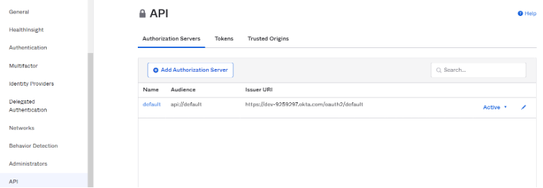
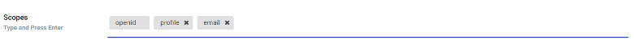
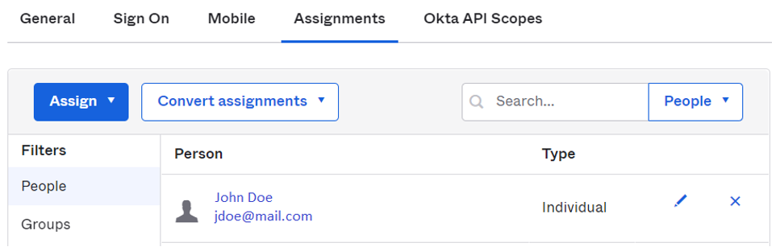

OpenID Connect Azure/Okta
与 Azure 和 Okta 集成 OpenID Connect (OIDC)
要启用 OpenID Connect 身份验证，需要设置 发行者、客户端 ID 和 客户端密钥。使用发行者 URL，SUSE® Security 将调用发现 API 以检索授权、词元和用户信息端点。
在 SUSE® Security OpenID Connect 设置页面顶部找到 OpenID Connect 重定向 URI。您需要将此 URI 复制到 Okta 的 登录重定向 URI 和 Microsoft Azure 的 回复 URL。

Microsoft Azure 配置
在 Azure Active Directory > 应用注册 > 应用名称 > 设置页面中，找到应用程序 ID 字符串。这用于在 SUSE® Security 中设置客户端 ID。客户端密钥可以在 Azure 的密钥设置中找到。

发行者 URL 采用 https://login.microsoftonline.com/{tenantID}/v2.0 格式。要找到 tenantID，请转到 menu:Azure Active Directory[属性页面]，找到目录 ID，并将其替换为 URL 中的 tenantID。

如果用户被分配到活动目录中的组，则可以将其组成员资格添加到声明中。在 Azure Active Directory → 应用注册 中找到应用程序并编辑清单。将 "groupMembershipClaims" 的值修改为 "应用程序组"。 令牌中包含的组数量是有上限的。 如果用户所属的组数量较多（超过200个）且使用了“所有”作为值，则词元中将不会包含这些组，导致授权失败。 使用“应用程序组”而非“所有”作为值将减少词元中返回的适用组数量。
默认情况下，SUSE® Security 在声明中查找 "groups" 以识别用户的组成员资格。如果使用其他声明名称，您可以在 SUSE® Security 的 OpenID Connect 设置页面中自定义声明名称。
Azure 返回的组声明是通过“对象 ID”而不是名称来识别的。组的对象 ID 可以在 menu:Azure Active Directory[组> 组名称页面] 中找到。您应该使用此值在 SUSE® Security → 设置中配置基于组的角色映射。

Okta 配置
登录到您的 Okta 账户。
在左侧菜单中，点击 “应用程序 → 应用程序"` 在中间窗格中，点击 "`Create App Integration”：

将弹出一个新窗格以选择 “Sign-in method”：

选择 “OIDC — OpenID Connect” 选项。
将出现一个派生窗格，用于选择 “Application Type”：

选择 “Native Application” 选项。
中央窗格现在将显示本地应用集成表单，您需要相应地填写以下值：
对于常规设置部分：
应用程序集成名称：此集成的名称。自由选择任何名称
授权类型（勾选）：
-
授权码
-
刷新令牌
-
资源所有者密码
-
隐式（混合）
对于登录重定向 URI 部分：
前往您的 SUSE® Security 控制台并导航到 “Settings” → “OpenId Connect Settings”。 在页面顶部，点击 “OpenID Connect Redirect URI” 标签旁边的 “Copy to Clipboard”。

这将把重定向 URI 复制到内存中。 将其粘贴到相应的文本框中：

对于指派部分：
选择 “Allow everyone in your organization to access” 以使此集成对您组织中的所有人可用。

然后单击页面底部的保存按钮。
一旦您的常规设置被保存，您将被带到新的应用集成设置，并且客户端 ID 将自动生成。
在 “Client Credentials” 部分，点击编辑并将 “Client Authentication” 部分从 “Use PKCE (for public clients)” 修改为 “Use Client Authentication”，然后点击保存。这将自动生成一个新的密钥，我们将在接下来的 SUSE® Security 设置步骤中需要它：

导航到 “Sign On” 选项卡并编辑 “OpenID Connect ID Token” 部分： 将发行者从 “Dynamic (based on request domain)” 更改为固定的 “Okta URL”：

Okta 控制台可以在经典模式和开发者模式下操作。 在经典模式下，发行者 URL 位于 Okta 应用程序页面的登录选项卡中。要在声明中返回用户的组成员资格，您需要在SUSE® Security OpenID Connect配置页面中添加"groups"范围：

在开发者模式下，Okta允许您自定义声明。这可以在 API 页面通过管理授权服务器完成（导航到左侧菜单 → Security → API）。发行者 URL 位于每个授权服务器的设置选项卡中：

声明是包含有关用户的信息以及有关OIDC服务的元信息的名称/值对。 在"`OpenID Connect ID Token`"部分中，您可以为用户的组创建新的声明，并在ID令牌中携带该声明（ID令牌是JSON Web令牌，是一种紧凑的URL安全方式，用于表示在两个方之间传输的声明，因此用户的身份信息被编码到令牌中，并且可以明确验证以证明其未被篡改）。如果配置了特定范围，请确保将该范围添加到SUSE® Security OpenID Connect设置页面，以便在用户身份验证后可以包含该声明：

默认情况下，SUSE® Security 在声明中查找 "groups" 以识别用户的组成员资格。如果使用其他声明名称，您可以在 SUSE® Security 的 OpenID Connect 设置页面中自定义声明名称。要配置声明，请编辑"`OpenID Connect ID Token`"部分，如下图所示：

在您的应用程序集成页面，导航到"`Assignments`"选项卡，并确保列出了相应的分配：

SUSE® Security OpenID Connect配置
在页面中配置正确的发行者URL、客户端ID和客户端密钥。

在用户身份验证后，可以通过基于组的角色映射配置推导出适当的角色。要设置基于组的角色映射，
-
如果未配置基于组的角色映射或无法找到匹配的组，则经过身份验证的用户将被分配为默认角色。如果默认角色设置为无，当基于组的角色映射失败时，用户将无法登录。
-
在管理员和阅读者角色映射中分别指定对应的组。用户的组成员资格在用户身份验证后，通过 ID 词元中的声明返回。如果找到匹配的组，将把相应的角色分配给用户。
该组可以在SUSE® Security中映射到管理员角色。个人用户可以通过以本地群集管理员身份登录，选择具有身份提供者“OpenID”的用户，并在设置 → 用户/角色中编辑其角色，来“晋升”为联合管理员角色。
将组映射到角色和名称空间
有关如何将组映射到预设和自定义角色以及 SUSE® Security 中的名称空间，请参见 用户和角色 部分。